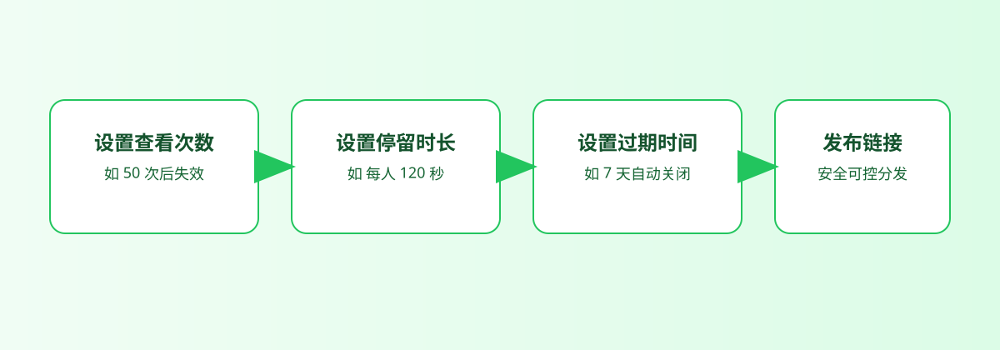

分享顺序
先上传、再生成入口、最后决定分发方式
如果顺序反过来，比如先把图发进群里，后面再补链接、补二维码，读者收到的会是两套入口。真正省心的做法，是把内容先收进一个入口，再往外分发。
这样你在聊天、邮件、海报或活动现场里传达的，始终是同一份内容。

如果你经常碰到这些情况，这篇就值得看完：图片老是散在聊天里、别人找不到最新那一组、线下要发的时候又得现找入口，或者内容已经发出去但你不知道什么时候该收回来。
活动照片、作品集、产品图、房源图、展览页、客户预览页等轻量分享需求。
让别人更容易打开，也让你自己更容易继续管理，而不是图一发出去就没法收口。
只围绕已确认能力写，不虚构评论协作、审批流、AI 识图或私有化部署这类功能。
一组图片就对应一个链接，别把同一批内容拆散到不同消息里。别人越容易理解入口，你后面越少解释成本。
聊天里发链接，线下换二维码，但底层还是同一个分享入口，这样不会出现线上是新版、线下还是旧图的情况。
如果内容只打算短期开放，就一开始把打开次数和有效期设好，别等扩散出去以后再补救。
一键失效最大的价值，不是删除内容本身，而是你在需要的时候能及时把入口关掉。
最佳实践不是靠记一堆规则，而是先搞懂一条顺的路径。下面这两张图，一张讲“怎么发”，一张讲“发出去以后怎么管”。
提示：下面的流程图和配图都可以点击放大，SVG 细节放大后会清楚很多。
如果顺序反过来，比如先把图发进群里，后面再补链接、补二维码，读者收到的会是两套入口。真正省心的做法，是把内容先收进一个入口，再往外分发。
这样你在聊天、邮件、海报或活动现场里传达的，始终是同一份内容。

很多分享工具把重点都放在生成链接那一刻，但真正麻烦的事通常发生在后面。别人继续转发了怎么办？内容过期了怎么办？这时候次数、有效期和一键失效就不是装饰，而是必要边界。
这也是为什么实践里一定要把“回收入口”也算进去。
下面这些图不是为了证明“后台长什么样”，而是为了帮你理解每一步的意义。图和文字交替出现，读起来才不会割裂。
如果一开始就把一组图片收进同一次分享，后面的链接、二维码和访问控制才有意义。真正让分享失控的，往往不是后期工具不够多，而是最开始就没有把内容整理成“一组”。

这张展示图最有价值的地方，是它能让你马上看懂“入口”这件事。不是四张图片、一个网盘、一条群消息，而是一个可以直接打开、直接继续传播的页面。
这就是为什么最好的分发实践永远不是“再多发一种方式”，而是“少给别人一个理解成本”。
分享不是发完就结束。你会关心内容有没有被打开、是否还应该继续开放，以及什么时候需要把入口关掉。这张图更适合放在正文里，因为它讲的是“传播之后的判断”，不是后台说明书。

很多分发麻烦不是当下出问题，而是内容长期留在外面以后才开始累积。把打开次数和时效提前设好，或者在需要时直接失效，是最稳的做法。
好用的图片分发不是“多放几个入口”，而是“用一个入口把该留给读者的清楚、该留给自己的边界，都一起留住”。